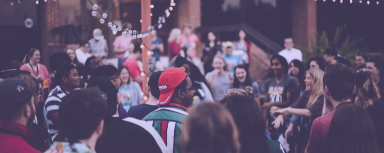

Blocos recomendados

Galo da Madrugada
O Galo da Madrugada é considerado o maior bloco de carnaval do
mundo. Ele atrai milhões de pessoas, com seus enormes carros
alegóricos, bandas de frevo e muita animação.
Recife - PE

Cordão do Bola Preta
Fundado em 1918, o Cordão do Bola Preta é um dos blocos mais
tradicionais do Rio de Janeiro. A multidão segue o famoso Bola
Preta pelas ruas do centro da cidade.
Rio de Janeiro - RJ

Olodum
O Olodum é um bloco conhecido por sua música e por promover a
cultura afro-brasileira. Eles desfilam pelas ruas do Pelourinho
com seus tambores e performances energéticas.
Salvador - BA

Bafo da Onça
O Bafo da Onça é um dos blocos mais tradicionais de Belo
Horizonte, com mais de 70 anos de história. O bloco desfila pelo
centro da cidade com seus foliões vestidos com fantasias e muita
animação.
Belo Horizonte - MG

Galo do Maracatu
Este bloco é uma celebração da cultura do maracatu, uma
manifestação cultural típica de Pernambuco. O Galo do Maracatu
desfila pelas ruas de Recife com batuqueiros, passistas, etc.
Recife - PE

Gigantes da Lira
O Gigantes da Lira é um bloco infantil que desfila pelas ruas de
Laranjeiras, no Rio de Janeiro. É conhecido por sua atmosfera
familiar e suas músicas animadas, atraindo crianças e adultos .
Rio de Janeiro - RJ

Ilê Aiyê
O Ilê Aiyê é um bloco afro que tem uma forte ligação com a
cultura negra e o movimento negro na Bahia. Seu desfile acontece
no Curuzu, no bairro da Liberdade, em Salvador
Salvador - BA

Enquanto Isso na Sala da Justiça
Inspirado nos super-heróis dos quadrinhos, o bloco Enquanto Isso
na Sala da Justiça anima as ruas de Belo Horizonte com muita
música, fantasias temáticas e diversão para todas as idades.
Belo Horizonte - MG